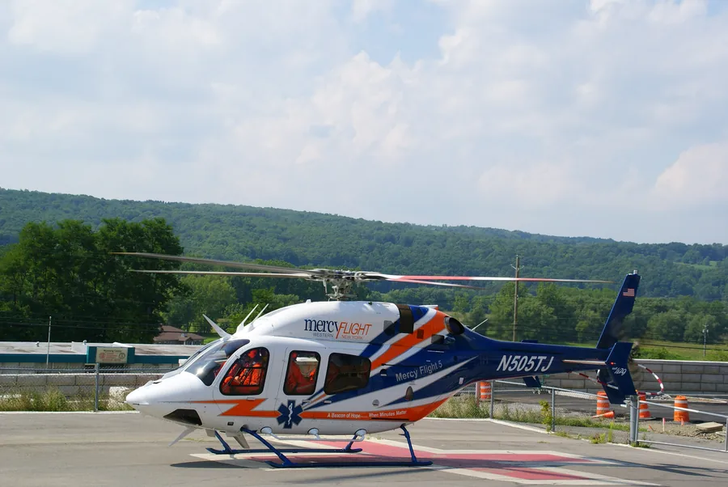

Mercy Flight Bell 429 Crash — Elba, New York
Vortex ring state training exercise led to main rotor blade contact with the tail boom and an in-flight breakup April 26, 2022, 13:00 EDT · open field near Genesee County Airport (GVQ), Elba, New YorkSerious outcome
No survivors
Case summary
Practicing recovery from vortex ring state, the pilots' abrupt control inputs let the main rotor flex down and strike the helicopter's own tail.

Twin-engine light helicopter, EMS/air-ambulance configuration
What happened
Source: NTSB Final Report (excerpt)About 12:56, the helicopter was flying over the airport and turned north. About 12:58, the helicopter was approximately 2 nm north-northeast of the airport and began a clockwise circular pattern. From 12:59:26 to 12:59:44 (18 seconds), the helicopter was operating in an envelope conducive to vortex ring state (VRS). At 12:59:47 there were multiple abrupt control inputs; the cyclic was nearly full forward and to the left with right antitorque pedal input applied. The collective lever position was in the full down position; the airspeed was decreasing from 26 knots to 9 knots with the helicopter's vertical descent rate increasing from -800 to -1,300 fpm. Several eyewitnesses observed and heard the helicopter flying overhead before the accident and throughout the accident sequence. One stated that he observed the helicopter "almost stationary" after it flew over, and then as it started to fly away, he heard a loud "bang", and the helicopter began to descend out of control. An additional witness stated that the helicopter was hovering before it "fell apart" with the fuselage falling separately, and another witness stated she did not see the helicopter but heard what sounded like an engine making a "whooshing" sound, and then "three loud and rapid cracks" in succession.
Why it happened
Source: NTSB Final Report"The pilots' inappropriate flight control inputs while in vortex ring state, which resulted in main rotor blade contact with the tail boom and a subsequent in-flight breakup. Also causal was the flight instructor's inadequate monitoring of the flight."
- Multiple abrupt flight control inputs applied while the helicopter was deep in vortex ring state
- Main rotor blade contact with the tail boom, causing an in-flight structural breakup
- The flight instructor's inadequate monitoring of the flight during the VRS training maneuver
- Likely inadequate briefing by the instructor on how VRS training would be conducted, including how it would be identified, entered, and exited
- No mechanical malfunction or failure of the helicopter that would have precluded a normal recovery from vortex ring state
Photos & media (3)
NTSB Docket, Accident Site, Damage and Examination Photographs, ERA22FA207About 12:56, the helicopter was flying over the airport and turned north. About 12:58, the helicopter was approximately 2 nm north-northeast of the airport and began a clockwise circular pattern. From 12:59:26 to 12:59:44 (18 seconds), the helicopter was operating in an envelope conducive to vortex ring state (VRS). At 12:59:47 there were multiple abrupt control inputs; the cyclic was nearly full forward and to the left with right antitorque pedal input applied. The collective lever position was in the full down position; the airspeed was decreasing from 26 knots to 9 knots with the helicopter's vertical descent rate increasing from -800 to -1,300 fpm. Several eyewitnesses observed and heard the helicopter flying overhead before the accident and throughout the accident sequence. One stated that he observed the helicopter "almost stationary" after it flew over, and then as it started to fly away, he heard a loud "bang", and the helicopter began to descend out of control. An additional witness stated that the helicopter was hovering before it "fell apart" with the fuselage falling separately, and another witness stated she did not see the helicopter but heard what sounded like an engine making a "whooshing" sound, and then "three loud and rapid cracks" in succession.
"The pilots' inappropriate flight control inputs while in vortex ring state, which resulted in main rotor blade contact with the tail boom and a subsequent in-flight breakup. Also causal was the flight instructor's inadequate monitoring of the flight."
- Multiple abrupt flight control inputs applied while the helicopter was deep in vortex ring state
- Main rotor blade contact with the tail boom, causing an in-flight structural breakup
- The flight instructor's inadequate monitoring of the flight during the VRS training maneuver
- Likely inadequate briefing by the instructor on how VRS training would be conducted, including how it would be identified, entered, and exited
- No mechanical malfunction or failure of the helicopter that would have precluded a normal recovery from vortex ring state